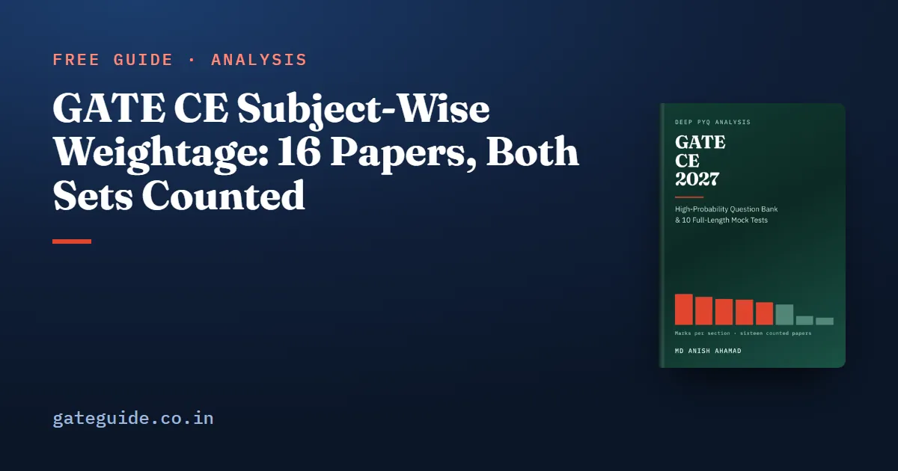

GATE CE Subject-Wise Weightage: 16 Papers, Both Sets Counted

Across all sixteen GATE Civil Engineering papers from 2019 to 2026 — Set 1 and Set 2 in each of eight years, 1,040 questions and 1,600 marks — Structural Engineering is the largest technical section at a mean of 15.1 marks. Geotechnical Engineering follows at 13.8 and Engineering Mathematics at 12.9. General Aptitude is exactly 15 in every paper.
In this guide
Every one of those means is printed here beside its range, and for Civil the range is the more useful number. The reason starts with something peculiar to this paper: there are two of them every year.
Key takeaways
- Civil is examined as two papers a year: two sessions, two question papers, two answer keys. No published weightage table says which set its figures came from.
- All sixteen papers were counted question by question against their official keys. Every one closes at 65 questions and 100 marks, with General Aptitude at exactly 15.
- Structural Engineering (15.1, range 7), Geotechnical (13.8, range 4) and Engineering Mathematics (12.9, range 5) lead the technical sections.
- The range is the honest width of what your paper might do. Construction averages 3.5 marks but has run from 0 to 7.
- 25 counted marks tested material the 2027 syllabus no longer names. They are kept out of the section means, which is why Structural reads lower here than in older tables.
The two-sets problem
Every GATE CE year in this record has two papers. The sessions are different, the questions are different and the keys are different. So a table that prints one number for "GATE CE 2024" has done one of two things: averaged the two sets without saying so, or counted one and labelled it the year. You cannot tell which from the table.
How much that matters depends on the year. Setting each year's two sets against each other, section by section, and adding up the differences:
| Year | Difference between its two sets, marks out of 100 |
|---|---|
| 2024 | 0 |
| 2025 | 2 |
| 2020, 2023, 2026 | 4 |
| 2021 | 8 |
| 2019 | 12 |
| 2022 | 16 |
The two 2024 papers are identical at section level. The two 2022 papers are not remotely alike: Structural 17 against 13, Transportation 9 against 12, Geomatics 3 against 1. A candidate in 2022 Set 1 and a candidate in 2022 Set 2 did not sit the same paper in any sense that matters to a study plan, and that spread is exactly why GATE normalises scores across the two sessions.
Now compare the same set number across different years. The difference runs from 6 to 30 marks, with a mean of 15.4, against a mean of 6.2 within a year. The blueprint moves about two and a half times as much between years as between the two sets of one year. The practical reading is that the two sets of a year are drawn to one plan and the plan is redrawn annually, so the year is the unit of evidence. Sixteen papers are real data, but they are not sixteen independent votes.
The counted table
Mean marks per paper across all sixteen, with the lowest and highest single-paper figures and the range between them.
| Section | Mean | Lowest | Highest | Range |
|---|---|---|---|---|
| Structural Engineering | 15.1 | 12 | 19 | 7 |
| Geotechnical Engineering | 13.8 | 12 | 16 | 4 |
| Engineering Mathematics | 12.9 | 10 | 15 | 5 |
| Water Resources Engineering | 12.6 | 11 | 14 | 3 |
| Environmental Engineering | 11.1 | 8 | 13 | 5 |
| Transportation Engineering | 10.0 | 6 | 12 | 6 |
| Geomatics Engineering | 4.4 | 1 | 7 | 6 |
| Construction Materials and Management | 3.5 | 0 | 7 | 7 |
| Material the 2027 syllabus no longer names | 1.6 | 0 | 4 | 4 |
| General Aptitude | 15.0 | 15 | 15 | 0 |
Each question was read from the official paper and took its marks and question type from that year's official answer key, not from the paper's layout. It was then placed in a section of the 2027 syllabus rather than the one in force when it was set, because that is the syllabus you will sit. Where a question could honestly belong to two sections, it went where the syllabus wording puts it and the alternative was recorded.
A count was accepted only if it closed: 65 questions, 100 marks, 30 one-mark and 35 two-mark questions, General Aptitude at 15 and the technical sections at 85. All sixteen close. That is also the quickest test of any table you find elsewhere — add the column, and ask which set it is.
What the range tells you that the mean cannot
A mean of 15.1 is a paper nobody sat. What you will sit is one draw from the range, and you do not choose which.
Structural Engineering averages 15.1 but ran from 12 in 2021 Set 2 to 19 in 2023 Set 2. That seven-mark swing is as large as Construction's best year in the entire record.
Construction Materials and Management averages 3.5 with a range of 7, twice its own mean. 2026 Set 2 contains no Construction question at all; 2021 Set 2 contains seven marks of them. On the evidence you cannot plan for this section to be worth anything in particular.
Environmental Engineering was 13 in both 2022 and both 2023 papers, then 8 in both 2024 papers. A five-mark drop in a section this size is close to a third of it, and it has since recovered to 10 and 11.
Transportation Engineering sat between 9 and 12 in every year except 2023, when both sets fell to 6. Start a trend line at 2023 and Transportation appears to double by 2026. It did not; the series began at a dip. A mean printed without its range is how that kind of false trend gets made.
At the other end, Geotechnical has never been below 12 or above 16, and Water Resources has stayed between 11 and 14. Those are the sections where preparation converts most predictably into marks. Engineering Mathematics was exactly 13 in twelve of the sixteen papers, and in all eight papers of the last four years.
Two sections need a decision rather than a schedule. Geomatics and Construction together average 7.9 marks and have ranged from 1 to 14. Both have short, largely factual syllabi, so the argument for preparing them is efficiency, not weight.
Why Structural reads 15.1, not higher
Twenty-five marks across the sixteen papers tested material the 2026 syllabus named and the 2027 syllabus does not: prestressed concrete (14), free vibration of an undamped single-degree-of-freedom system (8), dynamic pile formulae (2) and remote sensing (1). They are counted inside each paper's 85 technical marks, because the papers awarded them, but kept out of the section means.
Twenty-two of those marks would otherwise sit in Structural Engineering, and a table compiled before the 2027 syllabus would put the section at 15.9. The 0.8 difference is small as a number and real as a decision: it is prestressed concrete studied for a paper whose syllabus has stopped naming it. There is a fair counter-argument — 2027 still names design and detailing of beams, and a prestressed beam is a beam — and the GATE CE 2027 book keeps each affected question's alternative section on record, so a reader who takes that view can move the marks back.
One level down: the two 2019 papers
GATE 2027 is organised by IIT Madras, which also set both 2019 papers; the organising institute guide covers what that does and does not mean. At section level the 2019 papers look ordinary: Structural was 16 and 14, close to its mean.
One level down they are not ordinary. Across both 2019 papers Concrete Structures drew 1 mark and Steel Structures 10. That is the lowest Concrete figure in the record (from 2020 to 2026 it ran 2 to 8 marks a year, leaving out prestressed concrete, which 2027 drops) and the widest lead Steel has had: in no other year did it lead by more than 2. The single concrete mark is 2019 Set 1, CE Q.9, on nominal cover. 2019 Set 2 had no Concrete Structures question at all. A section-level table shows none of this.
Two papers are a signal, not a law. A different panel sets 2027 under a different syllabus, and nothing here predicts a repeat. What the finding does support is narrower: do not treat Steel Structures as the half of Structural you plan to survive. The organising institute and exam schedule are year-specific, so check the current notification on the official site and the GATE 2027 exam dates.
How to use these numbers
- Work the sections in the order the marks are in: Structural, Geotechnical, Engineering Mathematics, Water Resources, Environmental, Transportation, then Geomatics and Construction.
- Do not leave General Aptitude to the last month. It is 15 marks in all sixteen papers — ten questions, five at one mark and five at two — and nothing else on the paper is that reliable. The General Aptitude preparation guide covers the section.
- Plan for the range, not the mean. Environmental has been 8 and has been 13. Construction has been 0 and has been 7.
- If your weightage figures pre-date the 2027 syllabus, Structural is where they are most wrong, and prestressed concrete is the reason.
This guide gives the means and ranges. The GATE CE 2027 book prints the full sixteen-column table paper by paper, breaks every section down to topic level, and ranks the topics examined in all eight years.
Frequently asked questions
Which subject has the highest weightage in GATE Civil Engineering?
Structural Engineering. Across all sixteen counted papers, both sets from 2019 to 2026, it averages 15.1 marks and is the largest technical section in fourteen of the sixteen. Its range is 7 marks: it fell to 12 in 2021 Set 2 and rose to 19 in 2023 Set 2. Geotechnical Engineering is second at 13.8, and has never been below 12 or above 16.
Is the GATE CE weightage different for Set 1 and Set 2?
Yes, sometimes by a lot. Summing the section-by-section differences, the two sets of one year differ by 0 to 16 marks out of 100. The two 2024 papers are identical at section level; the two 2022 papers differ by 16, with Structural at 17 against 13. A weightage table that gives one figure per year does not say which set it counted.
How many marks is General Aptitude in the GATE CE paper?
Exactly 15 marks in all sixteen counted papers, from ten questions: five worth one mark and five worth two. It is the only block of the paper with no variation at all across eight years, and it is worth more than Geomatics and Construction Materials and Management combined, which average 7.9 marks between them.
Can I skip Construction Materials and Management for GATE CE?
Not safely. It averages only 3.5 marks, but its range is 7: it drew nothing in 2026 Set 2 and 7 marks in 2021 Set 2. Its syllabus is short and largely factual, so an evening of preparation buys a lot per hour when its questions appear, and the 2027 syllabus names several of its topics for the first time.
Why do other GATE CE weightage tables show Structural Engineering higher?
Most were compiled before the 2027 syllabus. Prestressed concrete and the free vibration of an undamped single-degree-of-freedom system account for 22 counted marks, and 2027 no longer names either. Kept inside the section, Structural would read 15.9. Kept out, as they are here, it reads 15.1, which is what the 2027 syllabus supports.
Sources
- GATE 2027 official website (IIT Madras)
- GATE 2027 CE syllabus (IIT Madras)
- GATE past papers and answer keys archive (IIT Guwahati)
- GATE 2026 CE Set 1 question paper (IIT Guwahati)
- GATE 2026 CE Set 2 question paper (IIT Guwahati)
Dates, fees and the syllabus are set by the GATE 2027 organising institute and can change. Always confirm at gate2027.iitm.ac.in.